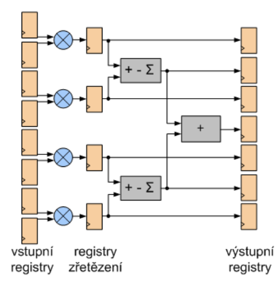
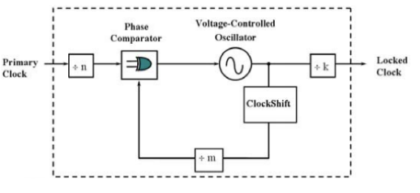

FPGA - Aritmetické obvody – realizace sčítaček, násobičky, specializované obvody, podpora datových typů¶
V prostředí FPGA se aritmetické operace realizují dvěma základními způsoby:
- V obecné logice: Využití LUT (Look-Up Tables) a propojovací matice.
- V dedikovaných blocích: Využití specializovaných DSP (Digital Signal Processing) bloků. Jsou to hotové, v křemíku vyleptané obvody, které nejdou přeprogramovat na nic jiného, ale svou práci dělají dokonale. Použití DSP bloku šetří stovky LUT a umožňuje dosahovat frekvencí v řádech stovek MHz, kterých by běžná logika nikdy nedosáhla.
Realizace sčítaček¶
Sčítání je nejzákladnější operací. V FPGA se sčítačky optimalizují s důrazem na minimalizaci zpoždění vznikajícího šířením přenosu (carry propagation). Poloviční sčítačka (half-adder) realizuje součet dvou bitů bez vstupního přenosu Cin, zatímco úplná sčítačka (full-adder) zahrnuje i vstupní přenos. Úplná sčítačka tedy sčítá tři bity: vstup A, vstup B a vstupní přenos Cin. Výstupem je součet S a výstupní přenos Cout. Pokud bychom zapojili několik úplných sčítaček za sebou pouze pomocí LUT, vznikl by Ripple Carry Adder. Zpoždění by rostlo lineárně s šířkou sběrnice N, protože každý bit musí čekat na Cout z předchozího bitu (přenos bitu z nejnižšího řádu do nejvyššího). To je pro FPGA neefektivní. Proto se přistupuje k optimalizaci pomocí Carry Chains (Carry logic). Tato logika pro přenos využívá speciální hardwarovou cestu (např. CARRY4 nebo CARRY8) vertikálně umístěnou přímo vedle LUT v každém logickém bloku SLICE. Obchází tak pomalou propojovací matici a díky tomu umožňuje realizovat velmi rychlé sčítačky i pro velký počet bitů (např. 64-bit adder) s minimálním zpožděním. Princip sčítání funguje tak, že součet je realizován pomocí operace XOR (0+0=0, 0+1=1, 1+0=1, 1+1=0), přičemž ale FPGA nenastavuje hradlo XOR. Místo toho se do LUT nahraje pravdivostní tabulka pro XOR. Když přijdou vstupy A a B, LUT se podívá na odpovídající adresu v paměti a vrátí výsledek, což je rychlé a nenastává žádný problém. Kdyby se ale přenos počítal také v LUTu a posílal se do dalšího LUTu přes běžnou propojovací síť, bylo by to pomalé kvůli zpoždění na vodičích. Proto má každý logický blok vedle sebe Carry Logic:
- Hardwarovou cestu: Je to fyzický vodič, který vede svisle přes celý čip, přímo od jedné buňky ke druhé, bez průchodu obecnou maticí.
- Multiplexory: Fungování je založeno na následující logice:
- Pokud A ≠ B (tj. 1+0 nebo 0+1): Přenos se propaguje, což je situace, kdy sčítací obvod na dané pozici sám o sobě nový přenos nevytvoří, ale pokud mu nějaký přenos přijde z nižšího řádu, tak ho pošle dál do vyššího řádu.
- Pokud A = 0 a B = 0: Přenos se zastavuje. Výsledkem součtu je 0 a žádný další přenos se nepředává. Ale v případě, že dorazí 1 v přenosu z nižšího řádu, tato 1 se přičte k výsledku, který se změní z 0 na 1 a tak se přijatá 1 z přenosu spotřebuje a kvůli tomu nedochází k předávání přenosu do vyššího řádu.
- Pokud A = 1 a B = 1: Přenos se generuje. Sčítačka vytvoří nový přenos bez ohledu na to, co se děje v předchozím řádu.
Samotný přenos (carry bit) pak neprochází skrz pomalé LUT, ale posílá se vyhrazenou vertikální cestou (Carry Chain) skrz celý sloupec SLICE bloků. Díky tomu jsou i široké sčítačky v FPGA extrémně rychlé a zabírají minimum logických prostředků.
Realizace násobiček¶
Násobení je mnohem složitější operace než sčítání. V FPGA existují dva hlavní způsoby, jak násobičku vytvořit: Softwarová realizace (pomocí obecné logiky LUT) a Hardwarová realizace (pomocí dedikovaných DSP bloků).
Softwarová realizace¶
Pokud potřebujeme vynásobit malá čísla (např. 4x4 bity) nebo FPGA nemá volné DSP bloky, syntezátor postaví násobičku z LUT tabulek a sčítaček. Funguje to na principu klasického násobení pod sebou, jen binárně (Shift & Add):
- Vytvoření dílčích součinů: Každý bit násobitele se logicky vynásobí (operace AND) s celým násobencem.
- Pokud je bit 1, opíše se číslo.
- Pokud je bit 0, jsou to samé nuly.
- Posun (Shift): Každý další řádek se posune o jeden bit doleva.
- Sečtení (Add): Všechny tyto řádky se musí sečíst.
Důvodem proč se takto počítají pouze velmi malá čísla a nebo se takto provádí pouze násobení konstantou je ten, že dochází ke kvadratickému růstu náročnosti, kde pro N-bitové číslo je potřeba N2 logických prvků. Dalším důvodem je, že takovéto sčítání je velmi pomalé a u 32-bitového násobení vznikne 32 řádků, které se musí sečíst, přičemž i s rychlými Carry Chains vzniká obrovský strom sčítaček, který má velké zpoždění.
Hardwarová realizace¶
Moderní FPGA mají v křemíku vyleptané hotové obvody tzv. DSP bloky. Ty nepočítají metodou "Shift & Add" jako v LUTu, ale používají pokročilé architektury a násobení binárních čísel provádějí přímo. Tyto bloky jsou řádově rychlejší a energeticky úspornější než řešení v LUT. Obvykle mají fixní šířku (např. 25x18 bitů), ale lze je kaskádně spojovat pro násobení větších čísel.
Specializované obvody¶
Mezi specializované obvody lze zařadit:
- DSP bloky
- Paměťové bloky
- Hodinové rozvody
DSP blok:¶
Výše zmíněné hardwarové násobičky jsou dnes téměř vždy součástí komplexnějších jednotek zvaných DSP bloky (např. DSP48E). Tyto bloky jsou složeny z násobiček, sčítaček a registrů a navrženy pro operace typu MAC (Multiply-Accumulate), které jsou klíčové pro digitální zpracování signálu (filtry FIR, IIR, FFT).

DSP blok DSP48E nabízí tyto základní funkce:
- Násobičku 25×18 bitů s plnou podporou MAC operací až se 48bitovým akumulátorem vhodným pro konstrukci IIR filtrů.
- Dynamický výběr operací v ALU jednotce (součet, rozdíl, logické operace) – kaskádní řazení DSP bloků s podporou přenosu výsledků až do hloubky 96 bitů.
- SIMD (Single Instruction Multiple Data) operace 4×12 bitů nebo 2×24 bitů v jednom DSP48E bloku a taktu.
- 48bitovou logickou jednotku, barrel shifter.
- Rychlý 48bitový čítač, detekce vzorů.
- Zaokrouhlování výsledků, saturace, přetečení a podtečení.
- Podpora multiplexování dat v čase.
Paměťové bloky (Block RAM a UltraRAM)¶
Zatímco malé paměti se dají tvořit z LUT (tzv. distribuovaná paměť RAM), pro ukládání větších objemů dat (řádově Kbity až Mbity) obsahují FPGA specializované paměťové bloky:
- Block RAM (BRAM): Základní paměťový prvek s granularitou 36Kbit, vnitřně dělena na 9bit bloky. Je to True Dual-Port paměť, což znamená, že umožňuje nezávislý čtení/zápis ze dvou portů zároveň na různých frekvencích (hodinových doménách). Lze ji konfigurovat jako RAM, ROM nebo FIFO. Často obsahuje vestavěnou logiku pro detekci a opravu chyb a lze je kaskádovitě propojovat, což umožňuje využít kapacitu od desítek po stovky Mbitů.
- UltraRAM (URAM): V novějších architekturách (UltraScale a dále) se objevují tyto větší bloky s vyšší kapacitu na jeden sloupec zdrojů a granularitou 4K x 72 bit (288Kbitů), které jsou plně synchronní, ale pouze pro jedny hodiny a nejsou plně dvouportové (neumí ReadFirst, WriteFrist režimy).
Hodinové rozvody¶
V FPGA nejsou obvody pro správu hodin rozházeny náhodně. Jsou sdruženy do CMT (Clock Management Tile), které se dělí na:
- MMCM (Mixed-Mode Clock Manager) – Výkonnější generátor hodin, určený pro složitou syntézu a fázování.
- PLL (Phase-Locked Loop) – Jednodušší generátor hodin, optimalizovaná pro čistotu signálu.
Základem obou je analogový obvod uzavřené smyčky, který dokáže synchronizovat vnitřní oscilátor s vnějším signálem. PLL dorovnávají zpoždění, dělí nebo násobí frekvenci, mění střídu, zajišťují fázové posuny. Snaha je o nulový skluz hran hodinového signálu v celém FPGA. Základem fázového závěsu je fázový komparátor a napětím řízený oscilátor doplněný děličkami (resp. čítači).

Vygenerovat hodiny nestačí, musí se také rozvést k tisícům klopných obvodů tak, aby k nim dorazily ve stejný čas. K tomu slouží speciální buffery:
BUFG (Global Clock Buffer):
Nejdůležitější buffer. Řídí globální hodinový strom (Global Clock Tree). Signál z BUFG dosáhne na jakýkoliv klopný obvod v celém FPGA s minimálním rozdílem zpoždění. Počet je omezený (např. 32 na čip).
BUFR (Regional Clock Buffer):
Rozvádí hodiny jen v rámci jedné části čipu (Clock Region). Je mnohem kratší a má menší zpoždění a spotřebu než BUFG. Ideální pro sběrnice, které vstupují na několika pinech vedle sebe.
BUFIO (I/O Buffer):
Speciální buffer, který nevede do logiky, ale pouze do I/O pinů. Slouží pro zachycení extrémně rychlých dat na vstupu dříve, než se signál rozhodí průchodem vnitřku čipu.
Další důležitou komponentou je BUFGMUX (Global Clock Buffer Multiplexer), která má hodinové vstupy, výběrové vstupy a hodinový výstup. Jejím úkolem je pustit do globálního hodinového stromu (BUFG) vstupní hodinový signál vybraný na základě hodnoty výběrového signálu.
Podpora datových typů¶
Boolean: Jedná se o nejjednodušší datový typ, který reprezentuje logickou 1 (True) nebo 0 (False). Používá se pro řídicí logiku (např. podmínky if, enable signály, reset). Nastavením se určí, který typ se syntézou vygeneruje:
- bit: Starší typ ve VHDL, nabývá pouze hodnot 0 nebo 1.
- std_logic: Průmyslový standard. Kromě 0 a 1 umí reprezentovat i další stavy, které jsou pro hardware kritické, jako je 'Z' (vysoká impedance – odpojeno) nebo 'X' (neznámá hodnota).
Fixed (Pevná řádová čárka): Fixed-point čísla umožňují počítat s desetinnými čísly, ale využívají k tomu celočíselnou (integer) aritmetiku, což je mnohem rychlejší a úspornější než čísla s plovoucí desetinnou čárkou.
- UFix (Unsigned): Pouze kladná čísla.
- Fix (Signed): Kladná i záporná čísla (obvykle v doplňkovém kódu).
Zápis vypadá následovně Fix_WL_FL, kde WL je délka slova (Word Length) a FL je délka desetinné části (Fraction Length). Příklad Fix_16_14: Celé číslo má 16 bitů. Z toho 14 bitů je vyhrazeno pro desetinnou část. Zbývají 2 bity pro celou část (včetně znaménka, je-li to signed), to znamená, že je potřeba vědět, v jakém rozsahu se signály pohybují a zvolit správný počet bitů. Na rozdíl od float, kde se desetinná čárka posouvá, zde je pevná.
- Kvantizace – Co se stane s bity vpravo. Když výsledek operace má více desetinných míst, než kolik můžeme uložit (např. násobení), musíme se zbavit přebytečných bitů na konci (LSB) buď klasickým matematickým zaokrouhlením (round), kde se přičte se polovina nejméně významného bitu a ořízne se. Což je přesnější, statistická chyba je nulová, ale musí se přičíst polovina LSB, což vyžaduje sčítačku, zabírá to místo na čipu a trvá to déle. Další možností je ořez (truncate), což je prosté odseknutí přebytečných bitů, nejsou k tomu potřeba žádná logická hradla navíc, ale vnáší to větší chybu (vždy se zaokrouhluje směrem dolů u Unsigned).
- Přeplnění (Overflow) – Co se stane s bity vlevo. Když výsledek operace přesáhne maximální hodnotu, kterou datový typ dokáže zobrazit (např. součet dvou velkých čísel). Může nastat saturace (saturate), kdy se hodnota zasekne na maximu nebo minimu. Například rozsah je 0 až 255 a z výpočtu vyjde 300, tak výsledek bude 255. Nebo přetečení, kdy hodnota přeteče a začne znovu od nuly. Například rozsah je 0 až 255 a z výpočtu vyjde 256, tak výsledek bude 0.
Float (Plovoucí řádová čárka): Klasická reprezentace reálných čísel s plovoucí desetinnou čárkou, například float (single) nebo double. Obecně jsou operace s těmito datovými typy velmi náročné na zdroje a plochu na čipu a mají také vyšší latenci (trvají déle) než operace s Fixed-point, proto se pro jejich výpočty využívají DSP bloky.